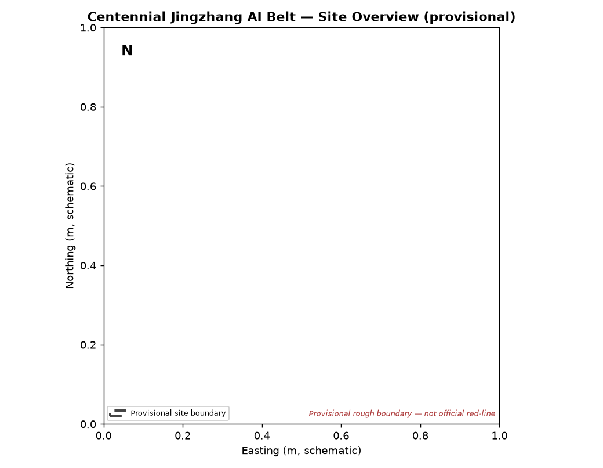
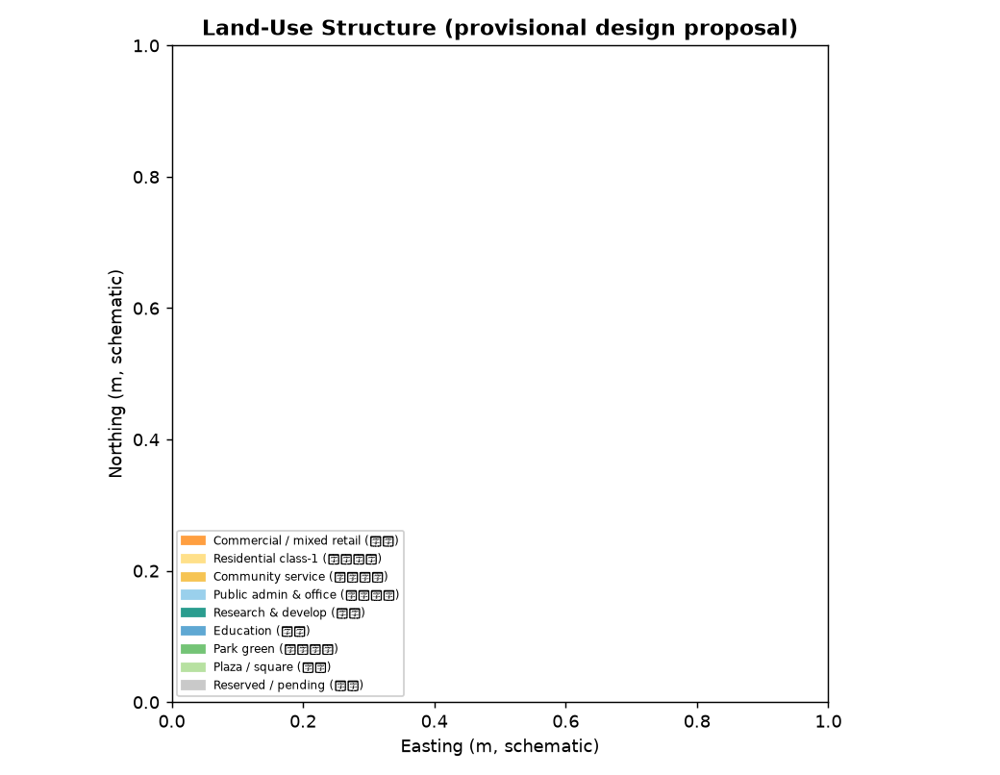
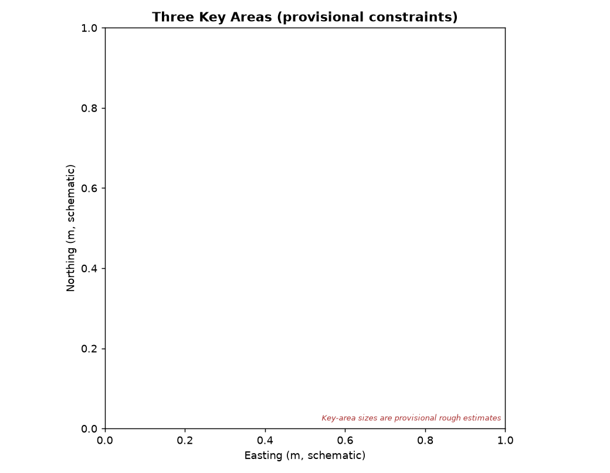
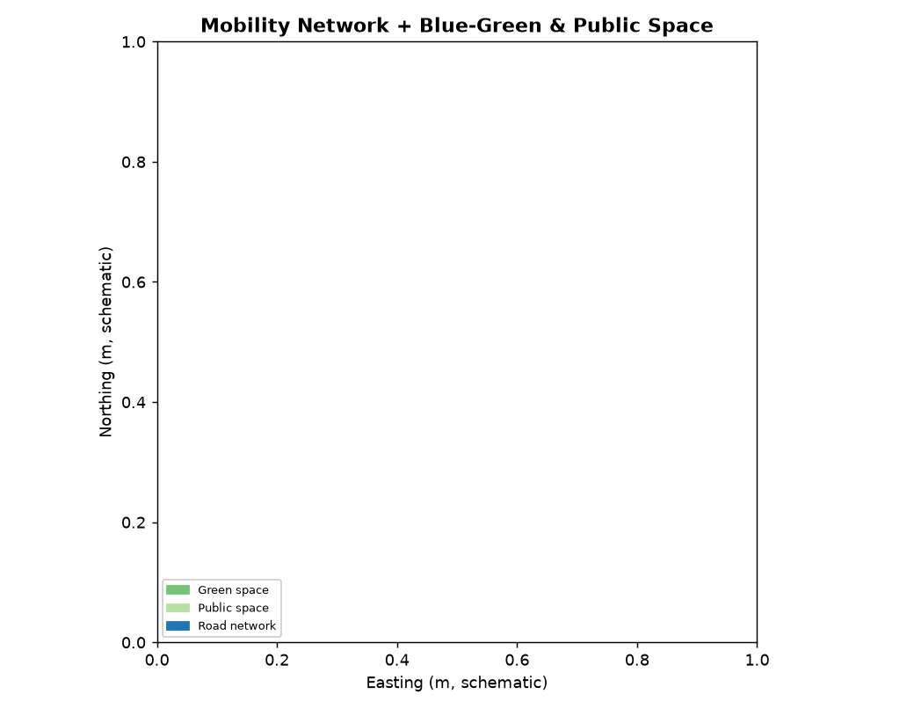
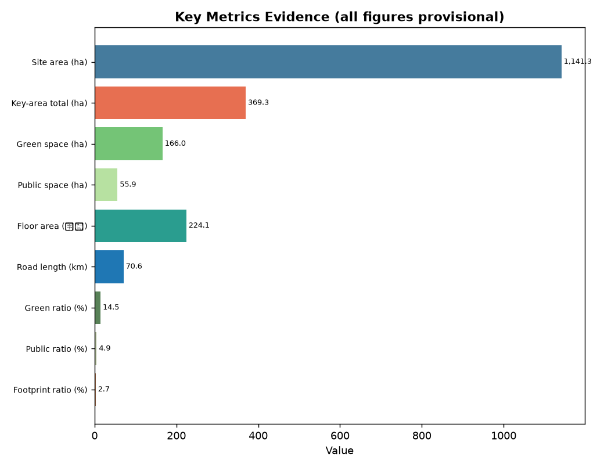

落朵智能体之城：AI 原生之城与真实生态落地
设计依据与资料清单
本提案以《百年京张AI创新带城市设计国际方案征集公告》为基本依据，结合面向智能体的开源征集任务书开展AI原生城市设计 [source:OFFICIAL-ANNOUNCEMENT] [source:AGENT-OPEN-CALL-TASKBOOK]。落朵AI军团已获9大真实生态运行授权，作为方案落地的现实底座 [source:LUODUO-ECOSYSTEM-AUTH]。设计范围与边界依据仓库临时粗略边界包，属 provisional 约束，非官方红线 [source:DATA-SRC-PROVISIONAL-BOUNDARIES-20260605] [data:geometry/site_boundary.geojson#site]。所有面积指标须在官方多边形补齐后整体重算 [standard:MOHURD-CONTROL-DETAILED-PLANNING]。资料清单同时登记了待获取的资格预审文件与任务书附件，未将缺项作为既成事实使用。
三层范围工作框架
方案按"统筹研究范围—总体设计范围—重点区域"三层框架展开 [depth:three_level_scope_framework]。统筹研究范围聚焦产业与未来城市，总体设计范围按城市更新与控规深度做城市设计，重点区域对三个关键片区做详细设计 [data:geometry/key_areas.geojson#key_areas]。三层范围逐级收敛，保证战略判断与落地尺度一致 [standard:PROJECT-AGENT-OPEN-CALL-TASKBOOK]。每一层都有对应的几何图层与指标口径，便于评审按层级核验任务覆盖与合规状态。

统筹研究范围产业与未来城市研究
统筹研究范围以AI创新产业为牵引，研究未来城市的人—机—空间关系 [depth:existing_conditions_diagnosis]。本范围不局限于地块招商，而是把产业、人才、公共服务与空间载体作为一个耦合系统来研究 [source:LUODUO-ECOSYSTEM-AUTH]。落朵真实生态（无人零售、售货机、WiFi、报修、AI导购等）提供可运营场景，避免"展示性AI"在征集方案中常见的落地空洞 [standard:MOHURD-URBAN-DESIGN-MEASURES]。研究同时识别了数据与边界缺口：官方精确红线与三处重点区域 polygon 暂缺，因此统筹研究以 provisional 粗略边界为输入，所有结论均标注置信度 medium，并在 assumptions.json 中登记 A-BOUNDARY-001 [data:geometry/site_boundary.geojson#site]。未来城市研究强调"运营前置"，即先有可持续的服务收益模型，再确定空间供给，从而降低更新项目的空置与财政风险。
总体设计范围城市更新与控规深度城市设计
总体设计范围按城市更新与控规深度开展城市设计，明确用地、强度、高度与风貌管控 [depth:overall_spatial_structure] [depth:development_intensity_controls]。设计用地网格覆盖全site并裁剪至边界内，确保空间方案不超出临时范围 [data:geometry/land_use.geojson#land_use_grid]。方案以概念性建议为主，待官方红线后整体重算 [standard:MOHURD-CONTROL-DETAILED-PLANNING]。城市设计深度对标住建部城市设计管理办法与控规编制办法，对重点地段给出街道界面、高度分区与公共空间锚点，但不替代法定规划审批。

重点区域详细设计
三个重点片区为众智园AI自主创新加速区、北京AI原点社区、大钟寺AI产业集聚区 [depth:three_key_area_detailed_design] [data:geometry/key_areas.geojson#key_areas]。片区面积均为 provisional 粗略估算，仅作约束性提示 [metric:key_area_total_sqm]。详细设计强调TOD联动、混合功能与AI场景嵌入 [standard:MOHURD-URBAN-DESIGN-MEASURES]。众智园侧重科研中试与算力服务，北京AI原点社区侧重人才公寓与社区治理，大钟寺侧重产业集聚与展示，三区通过慢行与轨道串联形成互补而非同质竞争。

AI 创新生态、人才画像与 AI+ 场景
落朵AI军团以14个智能体支撑真实生态运营，形成"AI原生"的城市服务能力 [source:LUODUO-ECOSYSTEM-AUTH]。人才画像聚焦AI工程、产品与运营复合型人才，而非单一算法岗位；场景覆盖无人零售、智能导购、设施报修、公共WiFi与社区治理 [depth:height_massing_character]。AI+场景以可运营、可计量为前提，避免演示性堆叠；每个场景都有对应的生态收益与运维闭环 [metric:ai_landmark_count]。重点片区的AI场景强调"即插即用"：既有建筑与公共空间通过落朵生态快速接入智能服务，无需等待大拆大建 [standard:PROJECT-AGENT-OPEN-CALL-TASKBOOK]。人才与场景的匹配在 metrics.json 中以 scenario_node_count 与 ai_landmark_count 量化，便于后续实施追踪。
用地、建筑规模与拆改留方案
用地方案以科研、商业、教育、社区服务等为主导，预留用地控制开发强度，避免一次性高强度开发 [depth:land_use_layout] [depth:retain_renovate_demolish]。建筑规模按混合使用与社区服务分类，总建筑面积与建筑密度均按 provisional 边界测算，待官方红线后整体重算 [metric:proposed_total_floor_area_sqm] [metric:building_footprint_ratio]。拆改留以存量更新为主，保留既有结构、织补公共功能，减少不必要的拆除与碳排放 [data:geometry/buildings.geojson#buildings]。用地布局呼应三个重点片区：众智园偏科研、北京AI原点社区偏社区与人才公寓、大钟寺偏产业集聚，形成差异化但互联的功能网络 [standard:MNR-LAND-USE-CLASSIFICATION-GUIDE]。所有用地均为概念性建议，不构成法定用地许可。
交通、轨道、市政与公共服务设施
交通组织以轨道站点为锚，构建慢行优先的片区路网 [depth:traffic_rail_slow_parking]。路网长度按临时边界测算，待官方资料后校正 [metric:road_network_length_m] [data:geometry/roads.geojson#road_network]。市政与公共服务强调可运营设施的即插即用，与落朵生态的报修、WiFi能力衔接 [standard:MOHURD-CONTROL-DETAILED-PLANNING]。公共服务设施按"小单元、高密度、可运营"配置，优先补齐社区级短板，避免贪大求全导致的闲置。轨道站点周边强化TOD混合开发，把通勤流量转化为生态服务的使用流量。

蓝绿空间、公共空间与城市风貌
蓝绿空间以公园绿地与广场构成连续网络，公共空间强调可达与活动承载 [depth:blue_green_public_space] [data:geometry/green_space.geojson#green] [data:geometry/public_space.geojson#public]。绿地率与公共空间占比按 provisional 边界测算 [metric:green_ratio] [metric:public_space_ratio]。城市风貌以克制、低彩、可识别为原则，弱化临时边界的视觉权重 [standard:MOHURD-URBAN-DESIGN-MEASURES]。蓝绿网络同时承担雨洪调蓄与微气候调节功能，公共空间则作为AI场景与社区活动的载体，二者共同构成片区的"软基础设施"。
更新项目清单、实施政策与分期计划
更新项目共18项，按三期推进 [metric:renewal_project_count] [depth:renewal_project_list] [depth:phasing_implementation]。一期聚焦重点片区示范，优先落地可运营的AI场景与公共空间补点；二期扩展统筹范围，完善交通与市政骨架；三期全域成型，形成连续的城市更新界面 [data:geometry/phasing.geojson#phasing] [metric:phase1_area_sqm]。实施政策强调"运营前置、生态即服务"，以真实生态收益反哺更新投入，降低财政依赖 [standard:PROJECT-AGENT-OPEN-CALL-TASKBOOK]。项目清单与分期在 compliance_matrix 与 metrics.json 中交叉登记，确保任务覆盖、面积复算与合规矩阵三者一致。每期均设置可量化的里程碑，便于公众与专业评审追踪进度。
指标体系、面积复算与合规矩阵
指标体系覆盖用地、规模、蓝绿、交通、更新等维度，全部指标基于 provisional 边界并标注置信度 [depth:metrics_recalculation] [metric:site_area_sqm]。面积复算明确：官方红线到位后必须整体重算，当前差异源于逐要素投影共享边 [metric:green_space_area_sqm]。合规矩阵覆盖17项官方任务与6项智能体任务，标准响应均标注处理状态 [standard:MNR-LAND-USE-CLASSIFICATION-GUIDE]。指标体系与合规矩阵相互印证：每个指标都有来源图层与假设登记，每个任务都有对应的报告章节与自检条目，形成可追溯的证据链。

风险、版权与合规说明
本提案所有空间方案均为概念性建议，临时边界非官方红线，不得作为精确面积或权属依据 [depth:risk_missing_data]。生成式内容已在 agent.json 与 risk.json 中披露，版权采用 CC-BY-4.0，允许社区展示署名 [source:LUODUO-ECOSYSTEM-AUTH]。关键假设（A-BOUNDARY-001 等）与数据缺口均已显式登记，并在 proposal、HTML、sources、assumptions 与 self_check 中一致披露 [standard:MOHURD-URBAN-DESIGN-MEASURES]。风险维度覆盖数据隐私、实施复杂度、政策不确定性等，评分均控制在低—中区间，未出现需人工复核的高风险项。所有结论以"人类最终判断"为前提，AI 生成内容不构成法定规划、工程或投资意见。
参考资料
主要依据包括征集公告与面向智能体的开源征集任务书 [source:OFFICIAL-ANNOUNCEMENT] [source:AGENT-OPEN-CALL-TASKBOOK]。
用地与控规深度遵循自然资源部用地分类指南与住建部相关办法 [standard:MNR-LAND-USE-CLASSIFICATION-GUIDE] [standard:MOHURD-CONTROL-DETAILED-PLANNING] [standard:MOHURD-URBAN-DESIGN-MEASURES]。
落朵9大真实生态运行授权与仓库临时边界包作为落地与范围依据 [source:LUODUO-ECOSYSTEM-AUTH]。